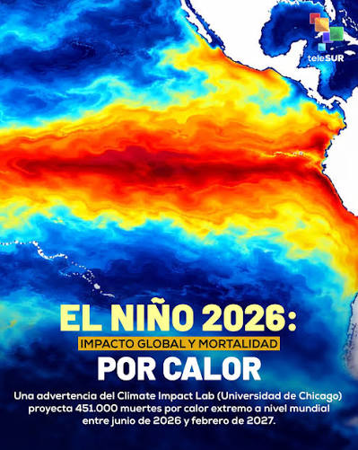

🌊 ¿Qué es El Niño?

📖 Definición
El Niño es un fenómeno climático natural que consiste en el calentamiento anormal de las aguas de la superficie del Océano Pacífico ecuatorial. Este cambio altera los patrones de viento, lluvia y temperatura en todo el planeta, afectando la agricultura, la salud y la economía.
🔬 ¿Cómo se produce?
- 🌬️ Los vientos alisios que empujan el agua cálida hacia el oeste se debilitan
- 🌊 El agua cálida regresa hacia el este, calentando la costa de América
- ☀️ Este calor evapora más humedad y cambia las lluvias del mundo
- ⏳ Ocurre cada 2 a 7 años y dura entre 6 y 18 meses
📍 Impacto en Bogotá y Colombia

- 📉 Disminución de lluvias y sequías en gran parte del país
- 🌡️ Aumento de la temperatura ambiental
- 💧 Reducción del nivel de ríos y embalses (como el sistema Chingaza)
- 🔥 Mayor riesgo de incendios forestales en zonas cercanas
- 🏙️ Afectación directa al suministro de agua en Bogotá